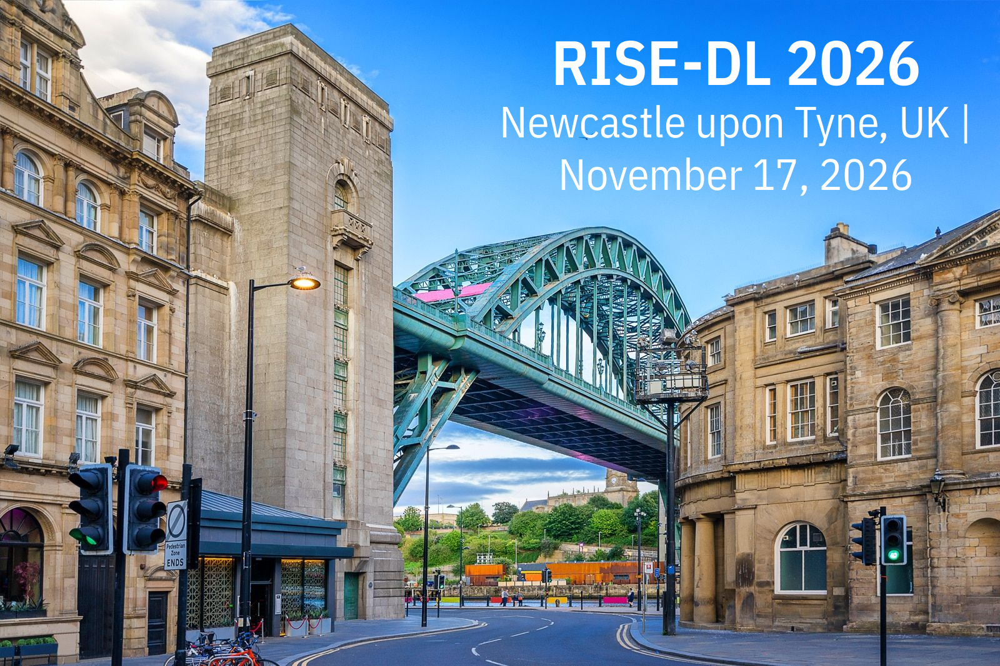

About the workshop
As deep learning models continue to grow in scale and complexity, efficiency and sustainability must become first-class objectives alongside performance. Yet progress in these areas remains fragmented across the algorithmic, hardware, and systems communities, limiting the development of end-to-end solutions for real-world deployment.
The RISE-DL (Research and Innovation in Scalable and Efficient Deep Learning) workshop addresses this gap by providing a focused forum for research on efficient and scalable deep learning across heterogeneous computing environments, ranging from IoT and edge devices to cloud and HPC infrastructures. The workshop welcomes contributions spanning model design, training, inference, and deployment, including training techniques for long-term sustainability, scalable training of generative AI, fast inference and serving techniques, on-device and continual learning, data-centric approaches to efficient deep learning, benchmarking and evaluation for efficiency and sustainability, and distributed learning paradigms across the edge–cloud continuum.
